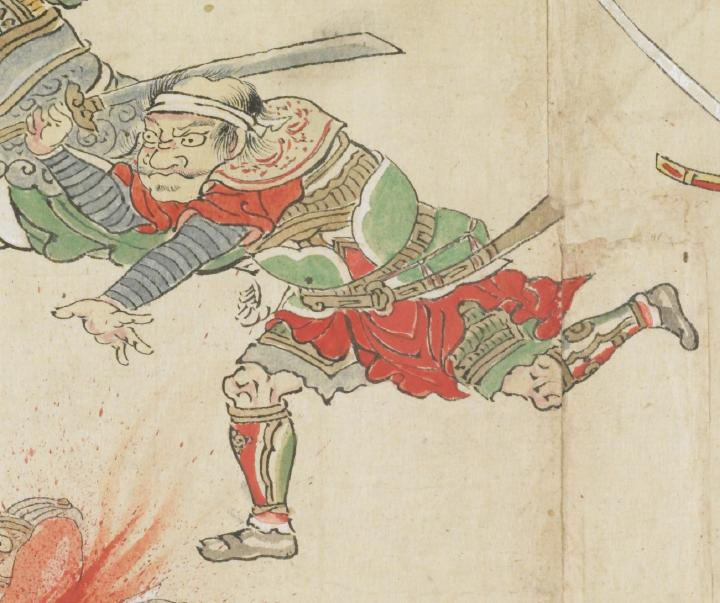

額に白い鉢巻きをまき、前方に駆け出している。大きく目を見ひらき、口をへの字に曲げている。赤い衣を身にまとい、その上に緑色の鎧をつけている。
出典：親書誌：U426_nichibunken_0079：酒天童子絵巻；シュテンドウジエマキ／日付：2006／資源識別子：U426_nichibunken_0079_0014_0008
Copyright (c)2010- International Research Center for Japanese Studies, Kyoto, Japan. All rights reserved.